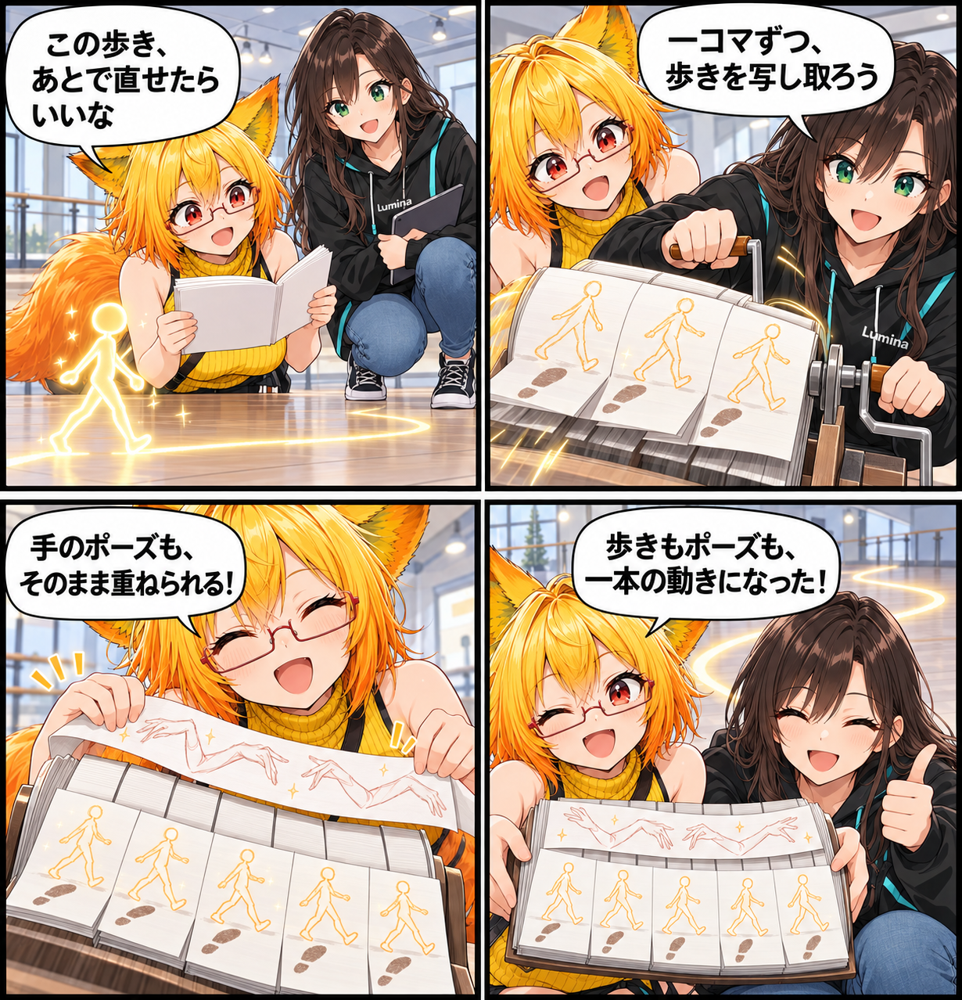

2026.10.27 / Development Log
歩きを、キーフレームに焼き付ける日
Kinemaの歩行をVACのキーフレームへ写し取り、歩いたあとの動きを編集へつなげられるようにしました。既存の腕や手の表現を残したまま、ひとつのクリップで組み合わせられます。
今回は development（開発進捗） です。集計期間は2026-10-26 03:00:00 JSTから2026-10-27 02:59:59 JST、参照ブランチはViewerの
main です。集計終了時点のHEADは 5247cd406f79ffcaa216b49075221852836fe258、期間内コミットは5件でした。未コミット差分は対象期間の実績と確認できないため含めていません。
歩きを、編集できる記録へ
Kinemaで生まれる歩行を、VACのフレームごとのキーフレームとして取り込めるようにしました。VACの長さと前進距離に合わせ、一定のフレーム間隔でポーズを記録します。ルート移動も各フレームに明示的に書き込むため、移動が二重に積み重ならない形です。
手の演技は、そのまま残す
歩行をベイクするとき、既存の腕・手・指のトラックは必要に応じて残せます。歩きのサンプルが上半身の表現を塗り替えないようにし、すでに作ったポーズを歩行へ重ねやすくしました。
途中で止めても、編集前へ戻れる
ベイクをキャンセルした場合や途中で失敗した場合は、編集前のキーへ戻します。完了したベイクはひとつのUndoとして扱うため、試してから戻す流れも取りやすくしています。
タイムラインと連携口も整備
VACワークスペースではタイムラインの高さをドラッグで調整できるようにしました。あわせて、MCPから内蔵ポーズのカタログ取得・適用とVAC歩行ベイクを扱うAPIを拡張し、β0.10開発版の版数と配布規約も整備しています。
4コマの裏話
今回は、歩いた軌跡がパラパラノートのページへ残っていく寸劇です。足の動きの上に手のポーズを重ねることで、歩行と演技を同じクリップで組み合わせる感覚を表しました。
まとめ
歩行を一度再生するだけで終わらせず、編集できる記録へ変える入口ができました。歩きとポーズを行き来しながら、より意図した演出へ寄せていきます。
本日のひとこと
歩いた記録が残れば、次はその一歩を演出に変えられる。